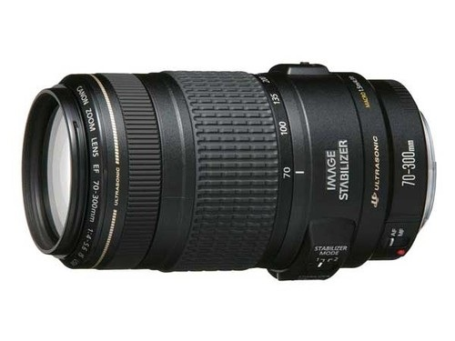

 一款尺寸适当、价格适中且能够体验真正远摄乐趣的远摄变焦镜头。搭配APS-C画幅EOS数码相机，可获得相当于约112-480mm的视角，能够充分拉近被摄体，拍出有冲击力的照片。自动对焦驱动方面采用了小型超声波马达“微型USM”。高速CPU与优化的自动对焦算法等实现了快速对焦。搭载有效果最大相当于提高约3级快门速度的手抖动补偿机构IS影像稳定器，可在整个变焦范围内有效补偿手抖动。成像线条有力，即使在最大光圈下，300mm附近远摄区域画面中央的分辨力也很高，而使用70mm附近焦段拍摄时，整个画面可获得均一画质。整个变焦范围内成像稳定。滤镜直径仅约为58毫米，镜头重量较轻约为630克。无论是搭配全画幅相机还是APS-C画幅机型，均能够获得良好的握持感。手抖动补偿模式分为适合普通拍摄的“模式1”和适合追随拍摄的“模式2”。适于运用远摄焦段的野生动物摄影和多种体育竞技类摄影等。使用此款远摄变焦镜头，能够充分体验200mm焦距镜头难以企及的拉近效果。
| 镜头焦距 | 70-300mm |
|---|---|
| APS-C画幅下的35mm规格换算焦距 *1 | 约112-480mm |
| 镜头结构 | 10组15片 |
| 光圈叶片 | 8片（圆形光圈） |
| 最小光圈 *2 | 32-45 |
| 最近对焦距离 | 约1.5米 |
| 最大放大倍率 *3 | 约0.26倍 |
| 驱动系统 | 微型USM超声波马达 |
| 手抖动补偿效果 | 约3级 |
| 滤镜直径 | 58毫米 |
| 最大直径及长度 | 约Φ76.5×142.8毫米 |
| 重量 | 约630克 |